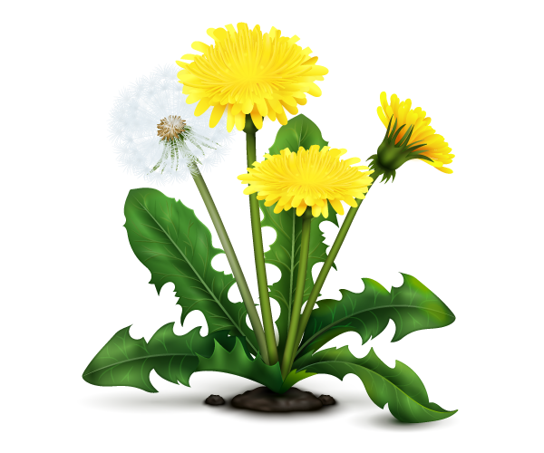
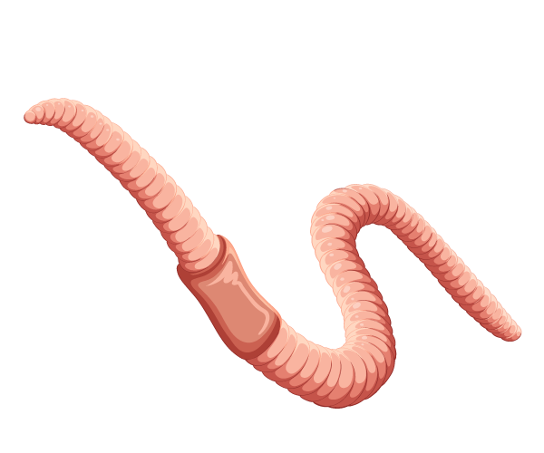
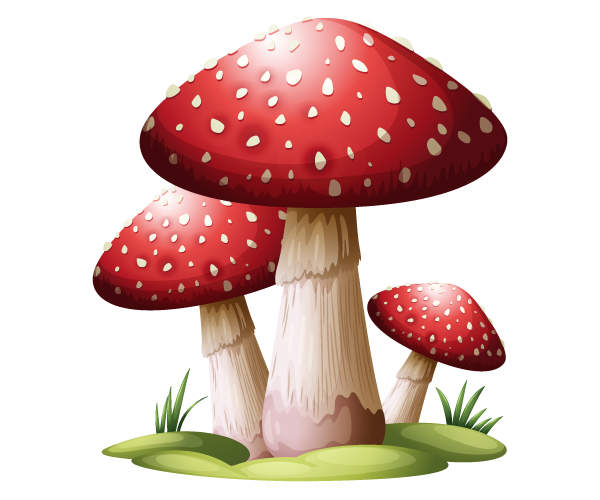
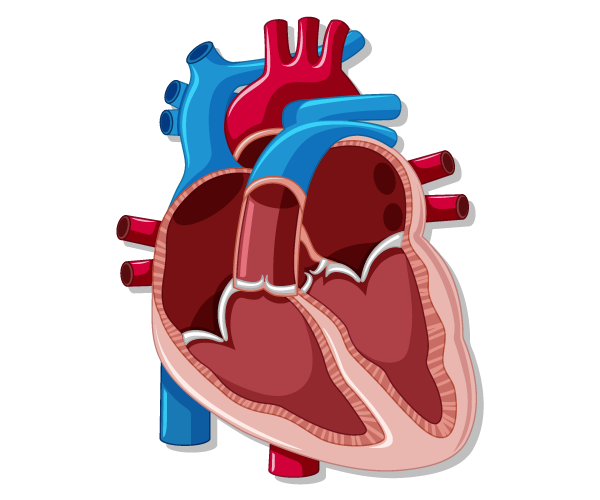

🟢
Приветствую, юнный исследователь! Готов доказать, что твоя биологическая магия достаточно сильная? Начнем наше испытание!
Биомагические навыки
Пройди 5 испытаний учёного-биолога и докажи, что достоин знаний Асгарда!
🦉 Испытание I: Разоблачи шпионов! Распредели объекты по их тайным научным орденам.

Одуванчик лекарственный

Дождевой червь

Мухомор красный

Сердце человека
🌊 Испытание II: Наш агент Николай Николаевич уплыл на Баренцево море шпионить за местной фауной. Каков его магический профиль?
🌿 Испытание III: Юные чародеи собирают высушенные травы и закладывают гербарий. Кто руководит этим таинством?
🐹 Испытание IV: Экспериментатор разводит пушистых свинок и взламывает код наследования их шерсти. Кто он?
👑 Испытание V: Великое расселение! Кликни сначала на живой организм, а затем на его законное Царство.
Хвощ лесной
Стрелолист широколистный
Дождевик грушевидный
Кишечная палочка
Муравей-листорез
Сыроежка фиолетовая
Травяная лягушка
Молочнокислая палочка
Ритуал Завершен!
Подсчитываем крупицы твоей магии...